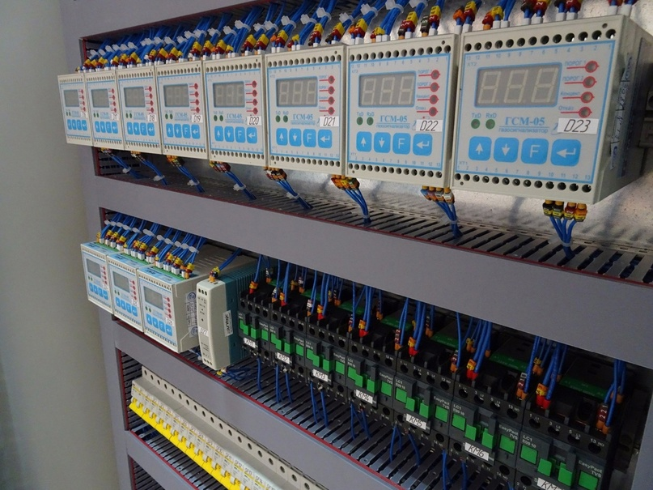
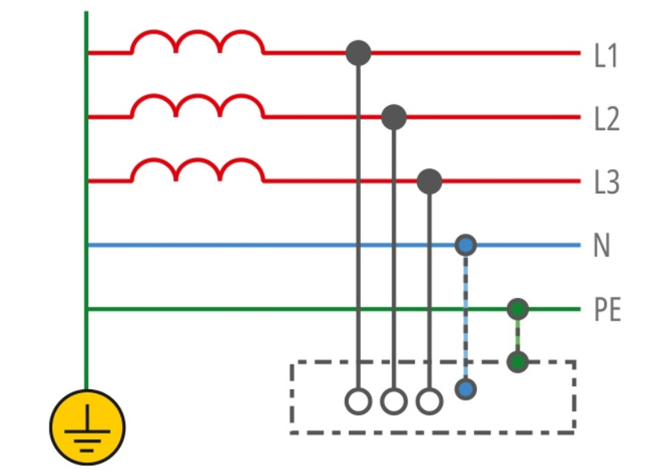

Описание форума:
Технический форум предназначенный для размещения статей.
На форуме вы встретите статьи связанные с автоматизацией технологических процессов.
Новинки в сфере автоматизации. Методики подключения интерфейсов.
Документацию для приборов нижнего/среднего/верхнего уровня.
Идеи для реализации умного дома.
Советы для реализации проектов.
 Стандарт промышленной сети EtherCAT
Стандарт промышленной сети EtherCAT
EtherCAT — это открытый международный стандарт: EtherCAT является официальной спецификацией IEC/PAS 62407, частью стандартов IEC 61800-7, IEC 61784-2 и IEC 61158.

Противоаварийная защита: система ПАЗ(СПАЗ)
Противоаварийная автоматическая защита (ПАЗ) — это аппаратно-программный комплекс, который используется в критических приложениях для перевода системы в безопасное состояние.

Однопроводный канал телеметрии по PLC
PLC (Power Line Communication) – коммуникационная сеть, транспортом которой является обычная электропроводка квартиры, офиса или предприятия.
Страницы: 1... 2... 3... 4... 5...